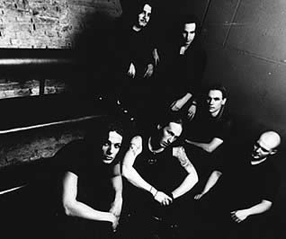
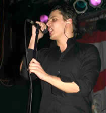
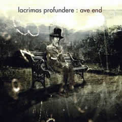

A banda alemã Lacrimas Profundere foi fundada
em 1993 pelo guitarrista Oliver Schmid e seu irmão Christopher.
Inicialmente, a banda já trazia uma proposta inovadora
para sua época: combinar a potência do Metal com
arranjos neoclássicos e elementos do gótico oitentista.
Em 1995, a banda já havia passado por várias
formações. Neste ano, Anja Hötzendorfer, violinista
clássica e vocalista, ingressa na banda e contribui imensamente
para o aprimoramento da proposta musical. Assim, em abril deste
mesmo ano, iniciaram-se as gravações para o disco
de estréia: ...And The Wings Embraced Us.
Este
trabalho trazia apenas seis faixas. Nele, percebe-se um rico arranjo
de cordas, piano e flauta, que se alternam com passagens características
do Death e Doom Metal, como os riffs e vocais guturais. O resultado
é um trabalho de estréia muito acima da expectativa
que teve uma repercussão tão positiva que a banda
passou a integrar a coletânea Deathophobia - Sampler
IV, com a música Snow. Este primeiro disco
chamou a atenção da gravadora Witchhunt Records
e as negociações iniciaram-se em novembro de 1995.
Após ambos chegarem a um consenso, o Lacrimas Profundere
entrou em estúdio no início de 1996, para iniciar
os trabalhos do segundo CD.
La naissance d´un rêve foi
lançado em abril de 1996. O segundo álbum chega
já sob a responsabilidade de, ao menos, manter o excelente
nível musical de seu antecessor. Neste disco, ao longo
de suas seis faixa, encontra-se a mesma qualidade de ...And
The Wings Embraced Us. Porém, as melodias e os arranjos
fazem soar mais melancólico e introspectivo. La naissance
d´un rêve, além de fortalecer a imagem
da banda na cena do metal alemão, também foi essencial
para incluí-los entre os principais artistas da gravadora.
Em 1997 é lançado o EP The Crown
of Leaving, com três faixas. No início de 1998,
a harpista Ursula Schmidhammer, integrou-se à formação.
Neste mesmo ano, participou da coletânea Nuclear Blast-Sampler
Nº 12; fato que contribuiu muito para fortalecer sua
imagem. A partir deste momento, foram realizadas diversas apresentações
ao lado de artistas como Lacuna
Coil, Theatre
of Tragedy, The Gathering, Haggard,
entre outros. Ainda, lançou mais um EP com três faixas,
intitulado The Embrance and the Eclipse. Em dezembro,
o Lacrimas Profundere assinou contrato com a famosa gravadora
austríaca Napalm Records.
Entre abril e maio de 1999, a banda grava o terceiro
trabalho da carreira: Memorandum. Ao longo de suas nove
músicas, este trabalho deixa nítido a influência
gótica do Lacrimas Profundere. Porém, algumas passagens
soam um pouco mais melódicas e chegam a lembrar as bandas
britânicas Anathema e My Dying Bride.
Christopher Schmid mostra-se versátil ao oscilar entre
os vocais guturais e limpos. Os arranjos tornam-se mais sofisticados
com a harpa de Ursula. As composições das letras
estão mais harmoniosas e complexas. Além disso,
os teclados, cordas, pianos e a voz de Anja compõem um
trabalho de excelente qualidade; considerado por muitos críticos
uma combinação de tudo que há de melhor nos
discos anteriores. A terceira música de Memorandum, ...And
How to Drown in Your Arms, chegou a atingir a terceira posição
na "US-Metal Radiocharts".
Paralelamente
ao lançamento, a banda apresentava-se em Summerbreeze
e preparava-se para excursionar ao Japão e América
do Sul. Outras apresentações ao lado de Tristania
e The Sins
of thy Beloved também estavam programadas; mas
foram canceladas devido à problemas de saúde dos
integrantes.
Após o lançamento de Memorandum,
ocorreram mudanças significativas no Lacrimas Profundere.
O baterista Lorenz e a harpista Ursula abandonaram a banda alegando
motivos familiares. Anja Hötzendorfer também deixou
a formação para dedicar-se ao seu trabalho em orquestras.
Em seguida, Lorenz foi substituído por Willi Wurm, da banda
Darkseed. Mas, após apresentações
em Leipzig, o baixista Markus Lapper, um dos integrantes mais
antigos, também deixou o Lacrimas Profundere. Para ocupar
sua vaga e dar início à produção do
próximo trabalho, foi convidado outro membro do Darkseed.
As gravações iniciaram-se no final
de 2000 e o álbum Burning: A Wish foi lançado
em 2001. As mudanças que ocorreram na formação
da banda já surtiram efeito neste trabalho. Burning:
A Wish, ao longo de suas dez músicas, desenvolve-se
com uma sonoridade menos carregada no peso do metal, que caracterizava
os trabalhos anteriores. Uma evidência disto são
os vocais de Christopher Schmid, que soam mais limpos. Porém,
não apenas nos arranjos, mas também nas letras,
as músicas soam mais tristes e introspectivas.
O violão, piano e teclados com timbres
atmosféricos e vocais femininos de fundo, encarregam-se
de produzir as passagens mais suaves. Uma das músicas mais
interessantes é a oitava faixa. Morning... Grey
tem pouco mais de três minutos e sua base harmônica
é composta por um lento arpejo de piano que se combina
com um doce vocal feminino e violinos de fundo, enquanto Christopher
"recita" a letra.
Em setembro 2001, o Lacrimas Profundere apresentou-se
no México ao lado de After
Forever, Within
Temptation e Diva Destruction. No ano seguinte
foi lançado o quinto álbum: Fall, I willl Follow.
Este disco foi responsável por uma grande mudança
na sonoridade. Ficam nítidas as influências do rock
gótico oitentista, mas a banda consegue ainda mesclar elementos
do metal e produzir um bom "meio-termo" entre as duas
vertentes; incluindo ainda detalhes de música eletrônica.
Por vezes, soando até como o HIM.
A versatilidade do Lacrimas Profundere chamou
a atenção e Fall, I willl Follow foi considerado
pela crítica como o melhor álbum da banda até
aquele momento. Foi este CD que abriu portas importantíssimas
e chegou a ser incluso como "Álbum do Mês"
na imprensa especializada de vários paises da Europa. Esteve
por 12 semanas no DJ-Chart Official alemão e 15 semanas
em execução nas rádios americanas. A turnê
de divulgação, realizada com oito apresentações
em novembro de 2002 no México, foi muito bem recebida pelo
público fã de Metal. Nesta mesma época, a
banda relança seus primeiros álbuns ...And the
Wings Embraced Us e La Naissance D´un
Rêve em um único CD intitulado The Fallen
Years.
Em 2003, o Lacrimas Profundere rodou pela Alemanha
em diversas apresentações e turnês ao lado
de bandas como Paradise Lost e Amorphis; chegando
a apresentar-se até mesmo na Turquia. As turnês prosseguiram
em 2004 e a banda apresentou-se em diversos festivais alemães.
Neste mesmo ano foi lançado o sexto disco da carreira.
Ave
End chega sob a expectativa causada por seu antecessor e
com o objetivo de mostrar que o Lacrimas Profundere possui uma
grande versatilidade musical e uma sólida discografia.
Este trabalho pode ser considerado uma continuidade de Fall,
I willl Follow, e a impressão que fica é que
a banda definitivamente enveredou-se pelas trilhas do Gothic Rock;
porém, sem deixar de lado sua face Metal.
O disco é muito bem recebido pela crítica
e também agrada muito aos fãs conquistados com o
disco anterior. Entre as dez faixas que compõem Ave
End, o destaque fica para a quarta música, Sarah
Lou. Porém, Amber Girl é a música
selecionada para divulgação do trabalho e ganha
uma versão videoclipe, o primeiro da banda. Ave End,
definitivamente, coloca o Lacrimas Profundere entre as principais
bandas do segmento.
Segundo os próprios Oliver e Christopher,
"Ave End é nosso primeiro álbum
conceitual e aborda o fim. Todas as canções falam
sobre o fim de uma relação, ou sobre drogas, prostitutas
e outras coisas que o conduzem ao fim". Em 2005, realiza
uma turnê e se apresenta em diversos festivais europeus
ao lado do The 69 Eyes. Em abril deste mesmo ano, o baterista
Christian Freitsmiedl abandona a banda e Tony Berger assume sua
vaga.
Em 2006, o Lacrimas Profundere dá início
às gravações do próximo trabalho.
Em maio, é lançado o EP Again It's Over
com seis faixas. Em seguida é produzido o videoclipe da
mesma faixa. Em julho, a banda dispara o álbum Filthy
Notes For Frozen Hearts.
Ao longo de suas 12 músicas, este CD deixa
nítido a influência de Gothic Rock recebida de banda
como o The 69 Eyes. Percebe-se também que o Lacrimas
caminha por uma trilha iniciada nos álbuns anteriores,
priorizando um equilíbrio entre o Metal e o Gothic Rock.
No segundo semestre deste ano, após o lançamento
de Filthy Notes For Frozen Hearts, a banda faz mais de
40 apresentações.
Já em 2007, Christopher Schmid e Daniel
Lechner deixam a banda alegando stress devido às turnês
constantes; enquanto Rob Vitacca se une ao Lacrimas Profundere.
Neste momento, já havia rumores de um novo trabalho em
andamento. Em setembro, iniciam-se as gravações.
Assim, em junho de 2008, é lançado
Songs for the Last View. O oitavo álbum da carreira
do Lacrimas Profundere traz treze faixas que obtiveram uma ótima
repercussão na mídia especializada, sendo classificado
como "essencial para amantes do rock gótico".
Ao longo de dez anos de carreira, vários
álbuns e singles foram lançados. Se comparados o
primeiro trabalho e o mais recente, percebe-se uma enorme diferença
na sonoridade. Algumas vezes soando até mesmo como o Rock
setentista, produzindo o chamado (pela própria banda) "Sad'n'Roll".
Esta diferença pode ser justificada devido à constante
troca de integrantes. Porém, é sem dúvida,
uma prova da versatilidade do Lacrimas Profundere.
Por
Spectrum
Downloads
Disponíveis: